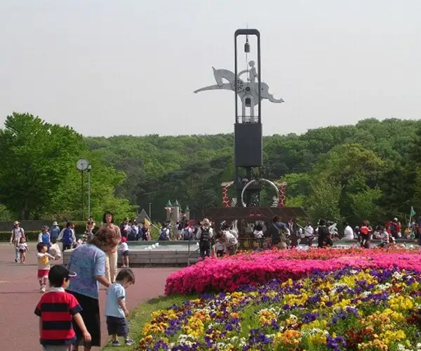
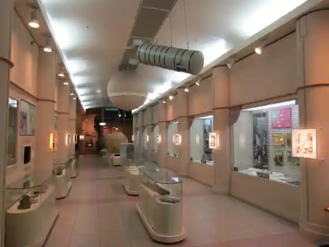
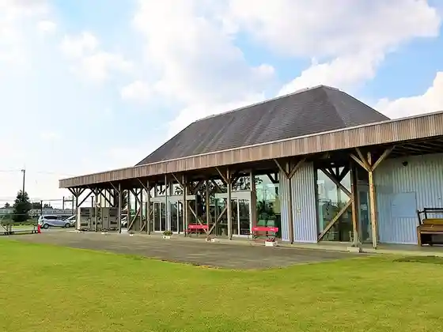
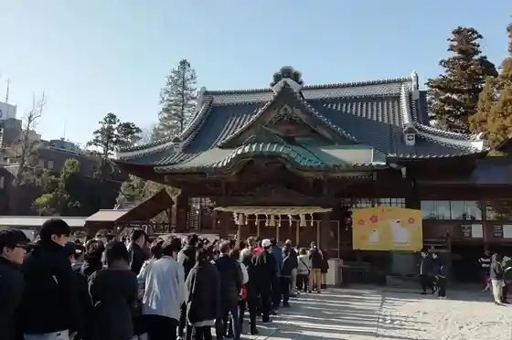
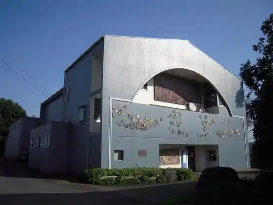

Japan / Saitama / Higashimatsuyama
Higashimatsuyama
Higashimatsuyama · Saitama
Higashimatsuyama
Highlighted on the Saitama map.

Sights
Saitamaken Kodomo Dobutsu Nature Park
Higashimatsuyama, Saitama · 0493-35-1234 · Official / source link
Saitama Piisu Museum (Saitamaken Heiwa Museum)
Higashimatsuyama, Saitama · 0493-35-4111 · Official / source link

Inahoterasu
Higashimatsuyama, Saitama · 0493-24-3157 · Official / source link

Yakyu Inari Shrine
Higashimatsuyama, Saitama · 0493-22-2104 · Official / source link

Gembaku no Zu Maruki Art Museum
Higashimatsuyama, Saitama · 0493-22-3266 · Official / source link

Iwadono Kannon Shoboji
Higashimatsuyama, Saitama · 0493-34-4156 · Official / source link
Higashimatsuyama Norin Park
Higashimatsuyama, Saitama · 0493-39-0150 · Official / source link
Higashimatsuyama Kurakake Seiryu no Sato
Higashimatsuyama, Saitama · 0493-81-6868 · Official / source link
Kaseki to Nature no Experience Kan
Higashimatsuyama, Saitama · 0493-35-3892 · Official / source link
Higashimatsuyama Botan Sono
Higashimatsuyama, Saitama · 0493-81-7607 · Official / source link